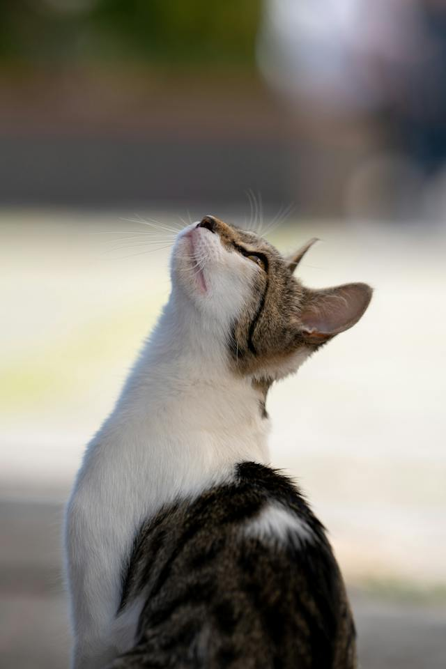
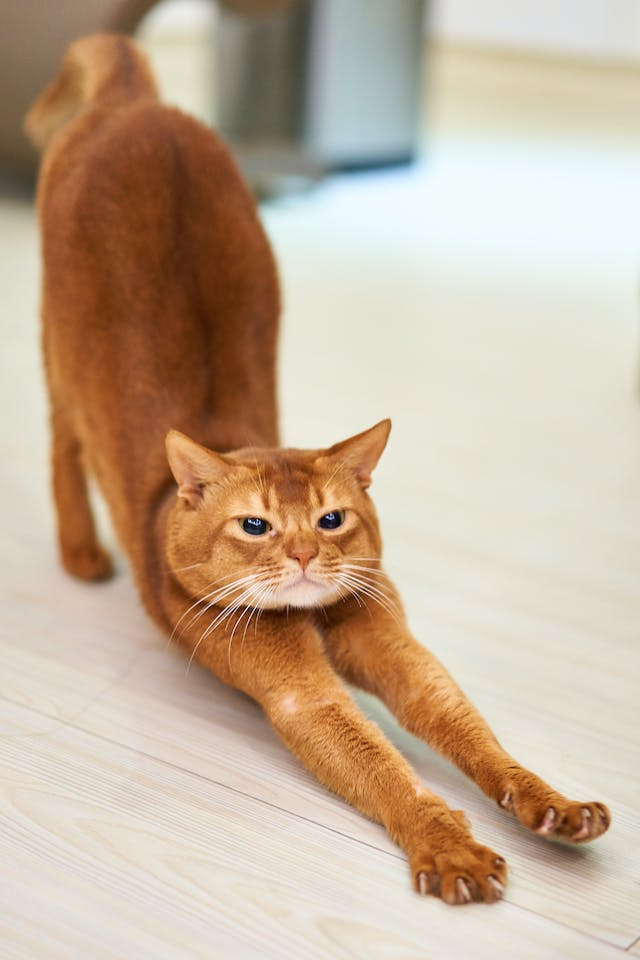

Kedi Davranışı
Dışarıdaki kediler hem gündüz hem de gece aktiftir, ancak geceleri biraz daha aktiftirler.[56] Evcil kediler zamanlarının çoğunu evlerinin yakınında geçirirler, ancak bu merkezi noktadan yüzlerce metre uzakta da olabilir. Bir çalışmada, 7 ila 28 hektar (17-69 akre) arasında değişen bölgelerde dolaştıkları belirlenmiştir.[57] Kedilerin aktivitelerinin zamanlaması oldukça esnek ve çeşitlidir, bu da ev kedilerinin bu zamanlarda daha çok insan aktivitesine tepki olarak daha çok sabah ve akşam aktif olabileceği demektir.
Sosyallik
Evcil kedinin sosyal davranışı, çok dağınık bireylerden, işbirliği yapan dişi gruplarına dayalı olarak bir besin kaynağı etrafında toplanan yabani kedi kolonilerine kadar değişir.[60][61] Bu tür gruplar içinde genellikle bir kedi diğerlerine baskındır.[62]
Kolonideki her kedi, dişi kedilerinkinden yaklaşık 10 kat daha büyük ve birkaç dişinin bölgesi ile örtüşebilen en büyük bölgeli cinsel aktif erkeklerle ayrı bölgesi vardır. Bu bölgeler idrar püskürtme ile, yüz bezlerinden salgılanan nesnelerle baş hizasında ovularak ve dışkılama ile işaretlenir.
İletişim
Evcil kediler iletişim için birçok seslendirme sesi kullanır, bunlara mırıldama, sesini titretme, tıslama, hırlama/mırlama, homurdanma ve birkaç farklı miyavlama biçimi dahildir.[68] Kulakların ve kuyruğun konumu, tüm vücudun gevşemesi ve pençelerin çıkarılması dahil olmak üzere beden dili, tümü ruh halinin göstergeleridir. Kuyruk ve kulaklar, kedilerde özellikle önemli sosyal sinyal mekanizmalarıdır. Yükseltilmiş kuyruk dostça bir selamlama anlamına gelir ve düzleştirilmiş kulaklarsa düşmanlığı gösterir.

Tımar
Kedilerin, kürklerini temiz tutmak için önemli ölçüde zaman harcadıkları bilinir.[74] Kedinin dili, yaklaşık 500 μm uzunluğunda, geriye bakan ve papilla denilen dikenlere sahiptir. Bunlar, onları sert[75] yapan keratin içerir, böylece papilla saç fırçası gibi davranır. Bazı kediler, özellikle uzun tüylü kediler, tımarlama sonucu midelerinde biriken tüyleri tüy yumağını ara sıra kusar. Bu kürk kümeleri genellikle sosis şeklindedir ve yaklaşık 2-3 cm (3⁄4-1+1⁄4 in) uzunluğundadır. Tüy yumakları, tüylerin bağırsak yoluyla yok edilmesini kolaylaştıran ilaçlarla ve ayrıca tüylerin tarak veya sert bir fırçayla düzenli olarak taranmasıyla önlenebilir
